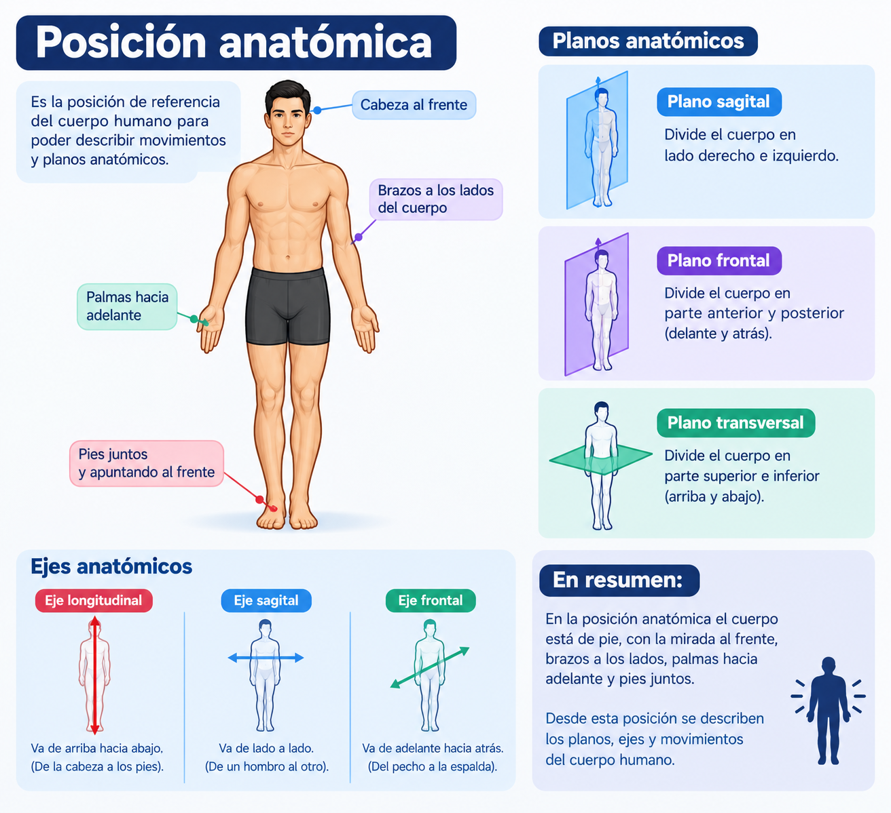

Texto
La posición anatómica es la postura de referencia universal para describir el cuerpo humano, ya sea de pie, erguido, mirando al frente, con los pies separados a la altura de los hombros y los brazos extendidos a los lados con las palmas hacia el frente (supinación). Todos los planos, ejes y términos direccionales se definen a partir de esta posición.
¿Por qué es necesario que todos los profesionales usen la misma posición de referencia antes de describir un movimiento? para que exista un lenguaje universal y se eviten confusiones al describir al cuerpo humano.
Por ejemplo, cuando un médico, un fisioterapeuta o un entrenador dicen que un brazo se mueve hacia adelante o que existe una lesión en la parte lateral de una pierna, todos entienden exactamente la misma ubicación y el mismo movimiento y sin importar la posición en la que esté la persona en ese momento.
Imagen 1 .Posición anatómica

Nota. Imagen generada mediante inteligencia artificial OpenAI. (2026). ChatGPT (DALL·E)